Installazione
Importante
Qualora Kodi fosse pre installato (es. da Store app del dispositivo) senza essere certi se installato con installer preso da proprio sito web, disinstallare e procedere seguendo istruzioni di seguito a seconda del Sistema Operativo
Attenzione
Per un pieno funzionamento di Kodi con tutte le sue dipendenze corrette, scaricare Kodi dal proprio sito per i vari Sistemi Operativi seguendo i passaggi sotto riportati
Fase 1 - Installazione Kodi
Installare Kodi su Windows/maOS/Linux/Android/iOS/Chiavette/Tv/Box/Firestick
Kodi per Windows
Installer per Windows
- Windows
- Selezionare sezione "Recommended"
- Scaricare Installer 64bit (NON Windows Store)
Kodi per Android Smarthpone/Tablet/Chiavette/Tv/Box/Firestick
Installer per Android Smarthpone/Tablet/Chiavette/Tv/Box/Firestick
- Android/AndroidTv
- Selezionare sezione "Recommended"
- Scaricare Installer ARMV7A 32bit - Chiavette/Tv/Box/Firestick (Android 9 - 12)
Scaricare installer ARMV8A 64bit - Smartphone/Tablet (Android 12 - 16)
Kodi per macOS
Installer per macOS
- macOS
- Selezionare sezione "Recommended"
- Scaricare Installer Intel (x86_64) o ARM64
Kodi per iOS
Guida con Esign
Come installare Kodi su iOS
-
Che cos’è ESign?
ESign è uno strumento per firmare file IPA e installare applicazioni su iPhone e iPad. -
Installare il profilo DNS
- Apri Safari sull’iPhone.
- Vai al sito https://www.applejr.xyz/?m=1
- Clicca su AppleJrDNS.
- Scarica il profilo.
- Quando iOS segnala che è stato scaricato un profilo, apri Impostazioni
- Tocca Profilo scaricato
- Controlla attentamente il nome dell’organizzazione e ciò che il profilo vuole configurare
- Se sei sicuro della provenienza, procedi con l’installazione
- In alternativa, puoi trovare il profilo da:
Impostazioni→Generali→ `VPN e gestione dispositivo
-
Installare ESign Dopo aver configurato il DNS
- Vai alla pagina https://api.khoindvn.eu.org/fSfJEA
- Apri la sezione Esign
- Scegli una delle installazioni ESign disponibili
- Tocca Install
- Attendi che iOS completi l’installazione
Nota: Dopo l’installazione, potrebbe essere necessario autorizzare il certificato aziendale andando su:
Impostazioni→Generali→VPN e gestione dispositivo -
Autorizzare l’app Se iOS non permette di aprire ESign
- Vai in Impostazioni
- Apri Generali
- Vai in VPN e gestione dispositivo
- Seleziona il profilo/certificato relativo all’app[cite
- Verifica attentamente l’organizzazione indicata
- Se riconosci e ti fidi del certificato, puoi procedere con l’autorizzazione
⚠️ Attenzione: Se compare un messaggio come “Impossibile verificare l’integrità dell’app”, non cercare semplicemente di aggirarlo installando certificati casuali: il certificato potrebbe essere stato revocato o non essere più valido
-
Installare un file IPA Una volta configurato ESign
- Scarica il file
.ipadi Kodi da qui: https://kodiipa.com - Apri ESign
- Tocca i tre puntini
- Seleziona Import
- Cerca il file IPA nell’app File
- Tocca il file
- Conferma l’importazione
Il file dovrebbe comparire nella lista di ESign[cite
- Scarica il file
-
Firmare l’IPA
- Tocca il file IPA importato
- Seleziona Signature
- Apri More Settings
- Se disponibile, abilita Remove mobileprovision after signing
- Tocca Signature
- Al termine della firma, tocca Install
- Attendi il completamento dell’installazione
-
Dopo l’installazione Una volta terminata l’installazione
- L’app dovrebbe comparire sulla schermata Home
- Puoi provare ad aprirla
- Se iOS non la avvia, controlla:
Impostazioni→Generali→VPN e gestione dispositivo - Se il certificato è stato revocato, l’app potrebbe smettere di funzionare
-
Problemi comuni
❌ “Integrity could not be verified”
Di solito significa che iOS non riesce a verificare correttamente la firma dell’appPossibili cause:
* Certificato revocato
* Firma non valida;
* Profilo/certificato non configurato correttamente;
* IPA modificato o danneggiato❌ ESign non si installa
Controlla che:
1. Il profilo DNS sia stato installato correttamente;
2. Il certificato utilizzato sia ancora valido;
3. L’installazione non sia stata bloccata da iOS❌ L’app si installa ma non si apre
Il certificato potrebbe essere stato revocato oppure l’IPA potrebbe essere incompatibile con il dispositivo/iOS❌ ESign smette improvvisamente di funzionare
È possibile che il certificato utilizzato sia stato revocato
Il sito stesso segnala che gli utenti ESign possono incontrare problemi di verifica e revoca -
La cosa più importante: sicurezza 🛡️
ESign può essere utile, ma il rischio principale non è necessariamente ESign in sé: sono soprattutto i file IPA, i profili di configurazione e i certificati scaricati da fonti non ufficialiPrima di installare qualcosa:
* Evita IPA provenienti da fonti sconosciute;
* Controlla sempre cosa stai installando;
* Non inserire mai il tuo Apple ID o la password in siti che promettono certificati;
* Non installare profili DNS che non riconosci;
* Non autorizzare certificati Enterprise di organizzazioni sconosciute;
* Per app importanti, preferisci App Store o metodi ufficiali Apple
Kodi per Linux
Installer Flatpak
- Linux
- Premere pulsante "Install" o installare dal proprio Store
- Oppure da terminale digitare:
sudo flatpak install flathub tv.kodi.Kodi
Fase 2 - Installazione addon Mandrakodi
Installare l'addon Mandrakodi
Mandrakodi
Guida Installazione
- Fase 1: Inserimento Sorgente
-
Cliccare sulla rotellina delle impostazioni:
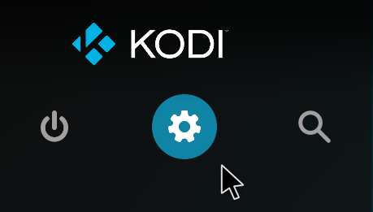
-
Cliccare su File:
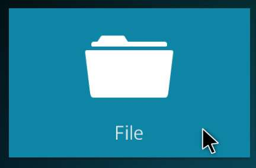
-
Nella maschera che compare (Gestore File), cliccare su Aggiungi sorgente:
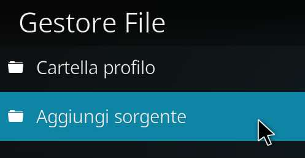
-
Nella maschera, cliccare su Nessuno:
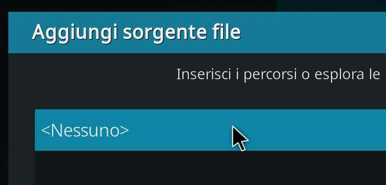
-
Nella nuova maschera, inserire l'URL
https://mandrakodi.github.ioe poi premere OK: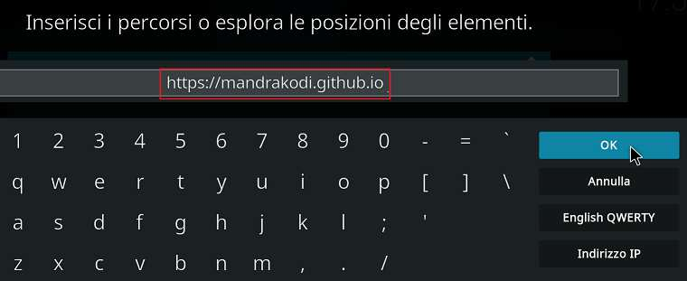
-
Nella maschera cliccare nello spazio vuoto sotto "Inserisci un nome per questa sorgente elementi":
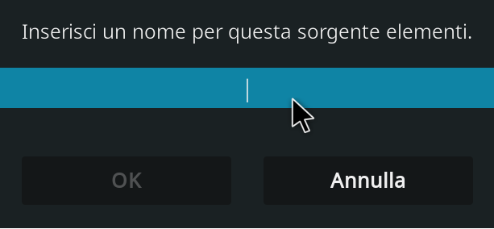
-
Inserire un nome qualunque e premere OK:
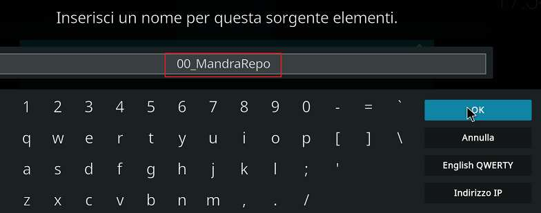
-
Nella maschera, a questo punto, si è attivato il pulsante OK per aggiungere la sorgente. Cliccatelo:
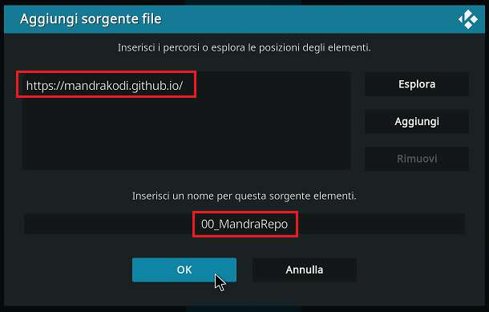
-
Adesso, nella maschera Gestore File, vi comparirà il nome che avete scelto:
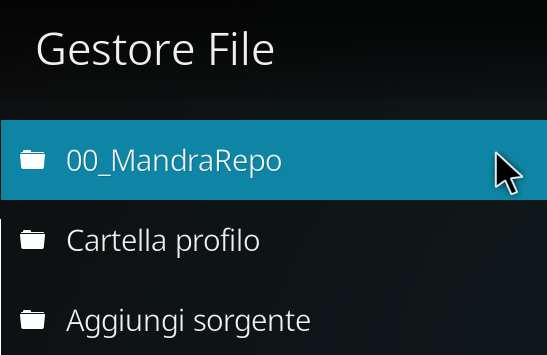
-
Fase 2: Installazione Add-on Pre-requisito: Installare dal Repository Ufficiale l'add-on YouTube (questo passaggio scaricherà dei componenti aggiuntivi necessari per MandraKodi)
-
Cliccare sulla rotellina delle impostazioni:
-
Nella maschera che compare, cliccare su Add-on:
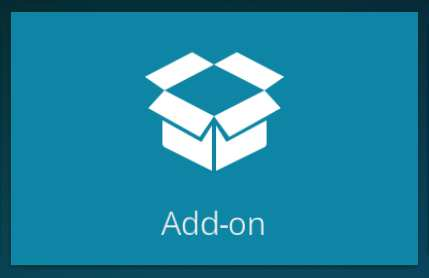
-
Nella nuova maschera, selezionare Installa da file zip:
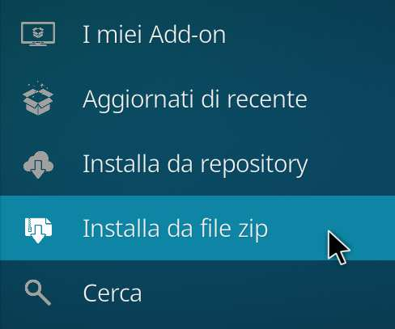
- A. Se è la prima volta che installate un add-on non ufficiale, vi comparirà questa maschera:
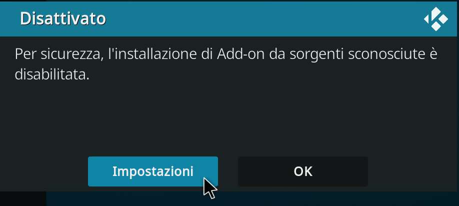
- B. Cliccare su Impostazioni e, nella nuova maschera, attivare Sorgenti sconosciute:
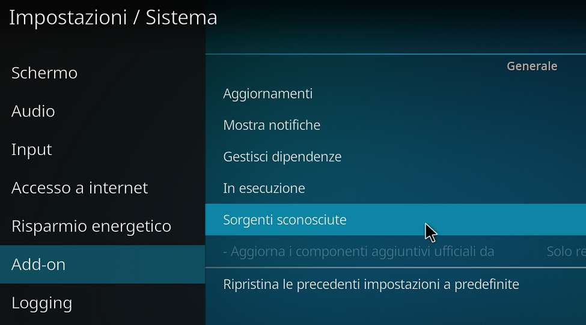
- C. Comparirà un altro avviso dove bisogna rispondere SÌ:
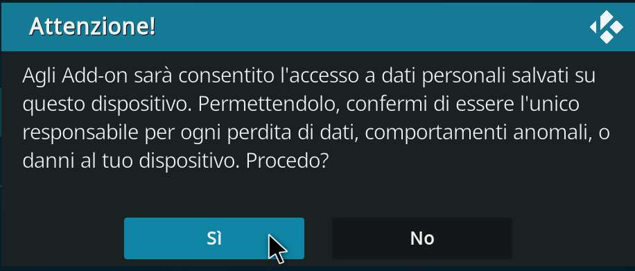
-
Se avete già attivato le "Sorgenti sconosciute", comparirà questo avviso. Cliccare su SÌ:
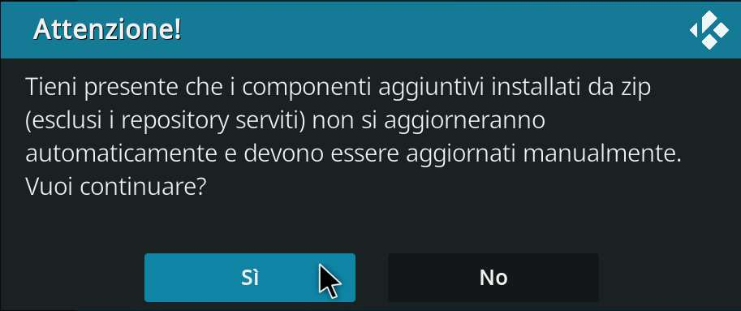
-
Nella maschera selezionare il nome della sorgente di MandraKodi:
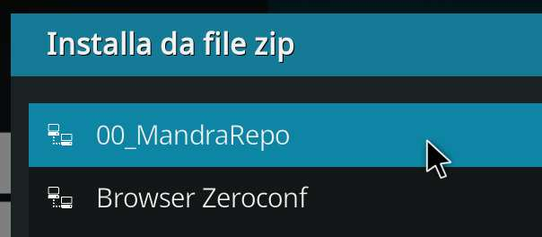
-
Nell'elenco che compare, selezionare il file
plugin.video.mandrakodi-2.2.1a.zip(o la versione attualmente disponibile):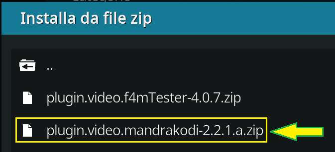
-
Attendere fino a quando non compare il messaggio "Add-on installato":
-
Fase 3: Installazione script aggiuntivi
A) Script.module.resolveurl
* Ripetere i passaggi 1 – 5 fatti per l'installazione dell'add-on MandraKodi.
* Nell'elenco che compare, selezionare il file script.module.resolveurl-5.1.92.zip (o la versione attualmente disponibile):
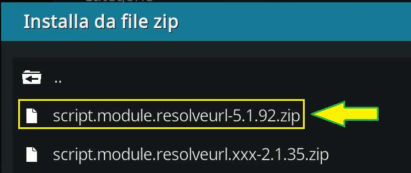
- Attendere fino a quando non compare il messaggio "Add-on installato":
B) Script.module.resolveurl.xxx
* Ripetere i passaggi 1 – 5 fatti per l'installazione dell'add-on MandraKodi.
* Nell'elenco che compare, selezionare il file script.module.resolveurl.xxx-2.1.35.zip (o la versione attualmente disponibile):
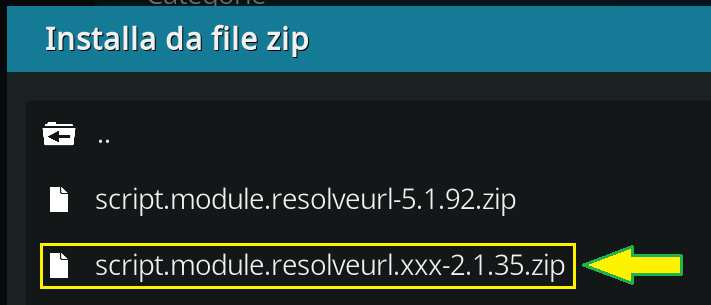
- Attendere fino a quando non compare il messaggio "Add-on installato":
- Fase 4: Configurazione addon
-
Cliccare sulla rotellina delle impostazioni:
-
Nella maschera che compare, cliccare su Add-on:
-
Nella nuova maschera, selezionare I miei Add-on:
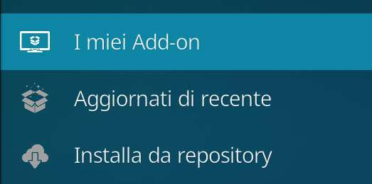
-
Nella nuova maschera, selezionare Addon video:
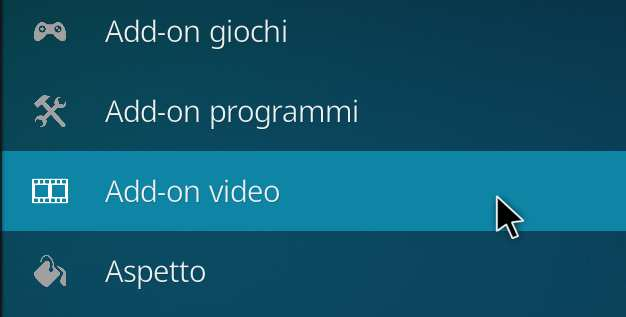
-
Selezionare l'add-on MandraKodi:
-
Nella maschera dell'add-on, selezionare Configura:
-
Nella maschera inserire l'URL preso dal bot
@mandrakodibote premere OK: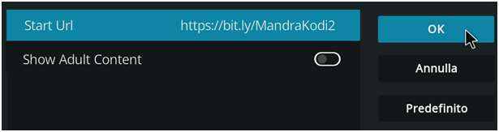